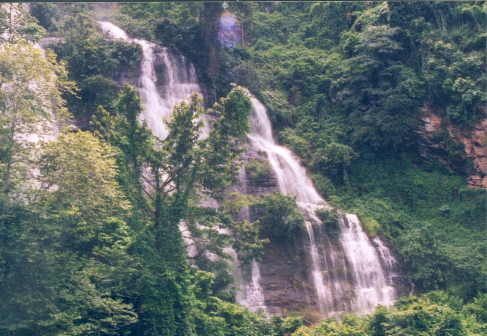
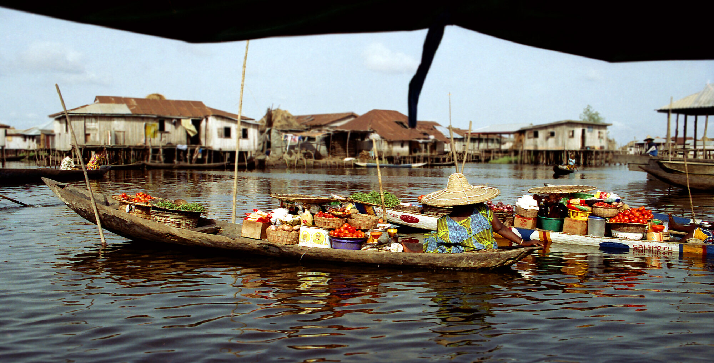
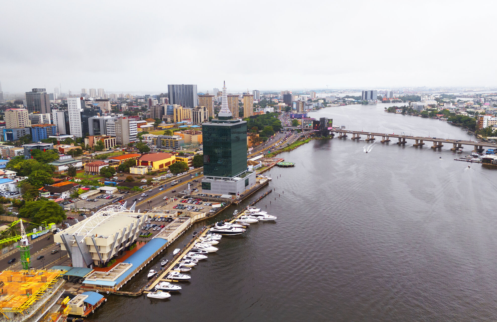
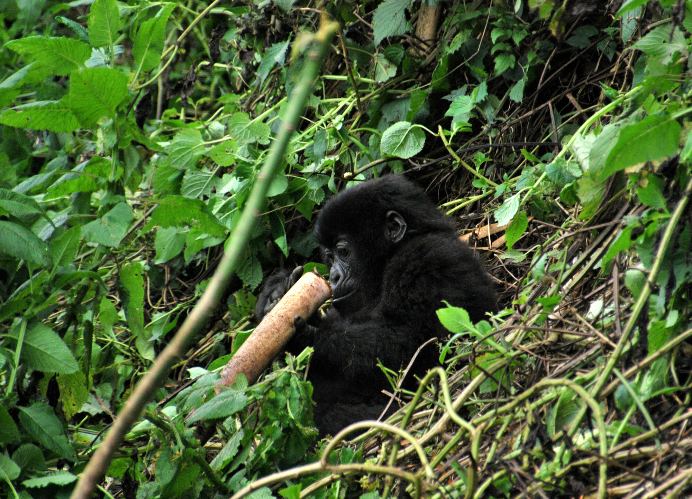
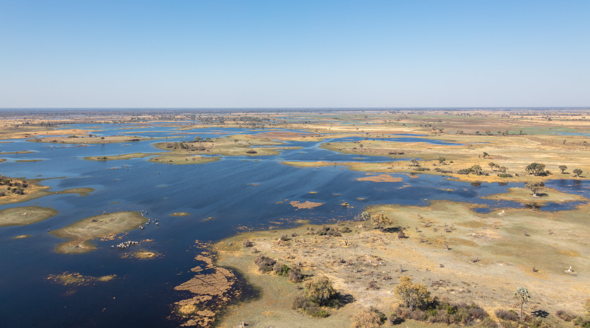

Thirteen countries · One personal approach
Find your place
in Africa.
Start with a country, a region or simply the feeling you want from the journey. HOBTOURS will help connect the places into a route that feels like yours.
Explore destinationsA continent of possibilities
One country.
Or a journey between.
Explore each country page for the places and experiences HOBTOURS can bring together. Routes are tailored around your dates, pace, comfort, interests and the people travelling with you.
Explore the region
West Africa
Coastal cities, living heritage and journeys shaped by powerful histories and everyday life.
Togo
City energy, mountain landscapes, waterfalls and cultural encounters from Lomé to Kpalimé and Togoville.
Lomé · Kpalimé · Togoville
Ghana
Heritage, coast, culture and highland journeys through Accra, Cape Coast, Kumasi and the Volta Region.
Accra · Cape Coast · Kumasi
Benin
Royal history, living traditions and waterside communities from Cotonou and Ouidah to Ganvié and Abomey.
Cotonou · Ouidah · Ganvié
Nigeria
Big-city culture, creative energy and private journeys beginning in Lagos or Abuja.
Lagos · Abuja · BadagryExplore the region
East Africa
Wild landscapes, welcoming cities, Indian Ocean coastlines and unforgettable wildlife.

Kenya
Nairobi energy, Maasai Mara safari, Indian Ocean beaches and journeys for couples, families and groups.
Nairobi · Maasai Mara · Kenyan coastTanzania
Serengeti wildlife, Kilimanjaro ambition and Zanzibar days shaped into one personal route.
Serengeti · Zanzibar · Kilimanjaro
Rwanda
Kigali culture, remarkable wildlife and gorilla trekking planned with care.
Kigali · Volcanoes National Park · Cultural communitiesExplore the region
Southern Africa
Design-led cities, open desert, lush deltas and safari country on a remarkable scale.

South Africa
Cape Town, Johannesburg, the Garden Route, safari and exceptional food and wine.
Cape Town · Johannesburg · Garden Route
Namibia
Open desert, dramatic dunes, wildlife and remote journeys through Windhoek, Sossusvlei, Swakopmund and Etosha.
Windhoek · Sossusvlei · Swakopmund
Botswana
Okavango waterways, Chobe wildlife and safari experiences with room to slow down.
Okavango Delta · Chobe · Wildlife areasExplore the region
North Africa
Ancient cities, desert horizons, Mediterranean light and richly layered cultures.

Morocco
Historic cities, craft traditions and desert routes through Marrakesh, Casablanca, Fes and the Sahara.
Marrakesh · Casablanca · Fes
Egypt
Cairo, Luxor, the Nile and the pyramids connected through a considered private journey.
Cairo · Giza pyramids · Luxor
Tunisia
Tunis, Carthage, Mediterranean coast and Sahara landscapes within one compact journey.
Tunis · Carthage · Mediterranean coastBegin with what moves you
Travel built around
what you love.
A destination is only the beginning. Tell us the experiences that would make the journey meaningful.
Food & local life
Roots & homecoming
Culture & heritage
Safari & wildlife
Group adventures

Featured group journeys
Discover Africa,
together.
Join a future shared departure or bring your own circle. HOBTOURS plans culture-led tours, hiking days, weekend escapes and private group journeys.
Explore group tripsWhy HOBTOURS
Local knowledge.
One personal plan.
From the first destination idea to the final arrival, one travel specialist helps bring the details together.
Tailor-made routes
Your dates, interests, pace and people shape the itinerary.
Private, family and group journeysLocal perspective
Culture, heritage, food and everyday life beyond the guidebook.
Rooted in trusted local insightDetails handled
Practical help with transportation, stays, airport services and reservations.
Before and during your journeyTraveller inspiration
A glimpse of the
journey ahead.
From the journal
Stories that bring
a place closer.
Read about festivals, heritage and wild places from the original HOBTOURS story archive.
Explore the journalThe next step
Choose a country.
We will connect the rest.
Share your destination, dates and travel style. HOBTOURS will help turn the idea into a thoughtful itinerary and clear next steps.
Plan your journey